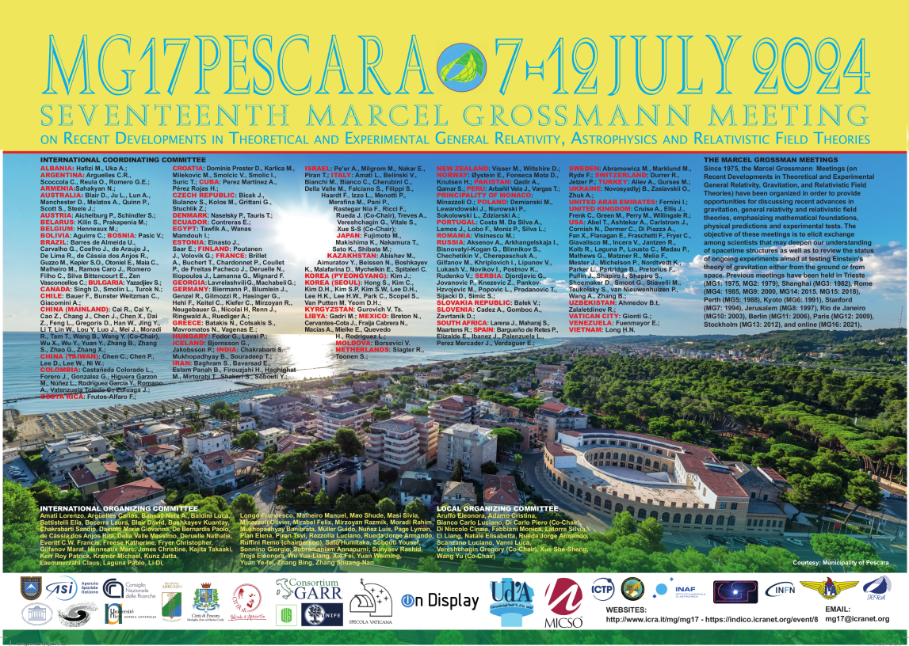

Измерение масс и красных смещений каталога скоплений галактик ComPACT
Determining mass and redshifts of comPACT catalogue
Exploring galaxy clusters through multi-wavelength observations and machine learning
My research focuses on the formation, evolution and detection of galaxy clusters using X-ray, microwave and infrared/optic surveys. I develop machine learning methods for identifying galaxy clusters and estimating their physical properties from multi-wavelength observations.
Studying scaling relations, mass estimates, SFR of galaxy clusters using SZ, optic, IK, X-ray surveys
Developing deep learning pipelines for detecting galaxy clusters in multi-wavelength surveys (submillimeter, infrared WISE, X-ray), improving completeness and reducing false positives.
Peer-reviewed papers and conference proceedings. Full list also on Google Scholar and ORCID.
Astronomy Letters 49.11, pp. 646–661
Physics of the Cosmos: proceedings of the 51st All-Russian student scientific conference, pp. 110
Determining mass and redshifts of comPACT catalogue

Detect galaxy cluster SZ signal by DL approach
Leading a team developing an algorithm to classify galaxy clusters using various architectures: CNN, MLP and Transformer - and to compare their efficiencies on the infrared (IR) data of the WISE survey (W1, W2 bands) and the microwave data of ACT+Planck (f90, f150, f220 frequencies)
galaxyHackersObtained in directions of SZcat by applying deep learning method to ACT+Planck maps to detect Sunyaev-Zeldovich effect
ComPACT